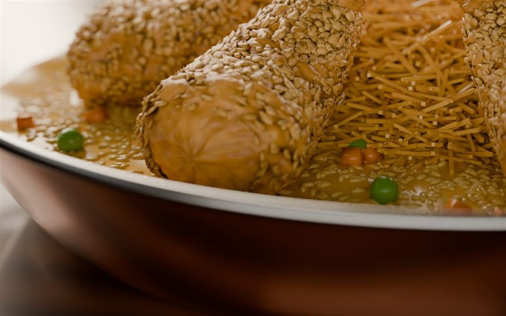

Camarão empanado
Seis camarões em crosta dourada sobre arroz cremoso, com ervilha, cenoura e batata palha no centro da panela.
Toque num camarão para ele pular; com o mouse, arraste-o para passar no creme. Segure no molho para subir o fogo e toque na alça para inclinar a panela.